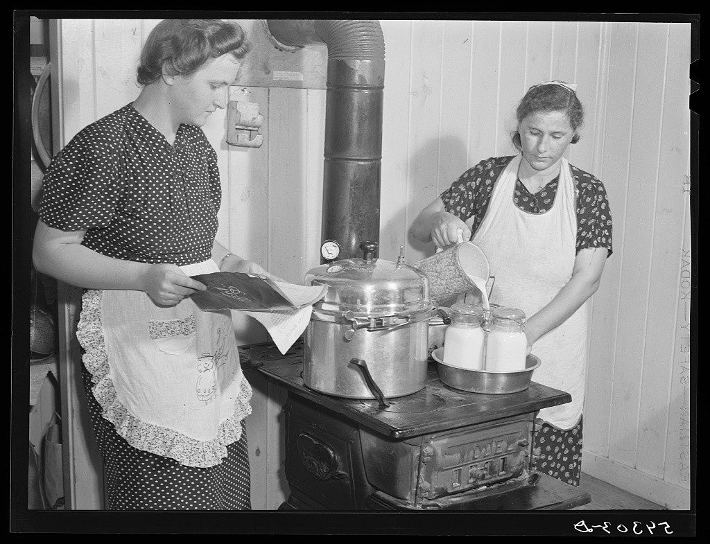

Disclosure: some links on this site are affiliate links. As an Amazon Associate I earn from qualifying purchases, at no extra cost to you.
How to Make Butter at Home
Churning butter was a weekly chore on old farms, and it still takes only a jar or a mixer and some patience. Washing out the buttermilk is the step people skip, and it is what keeps homemade butter from going sour fast.

Canning milk with pressure cooker in project family's home. Terrebonne Project, Schriever, Louisiana · Photo: Library of Congress (no known restrictions)